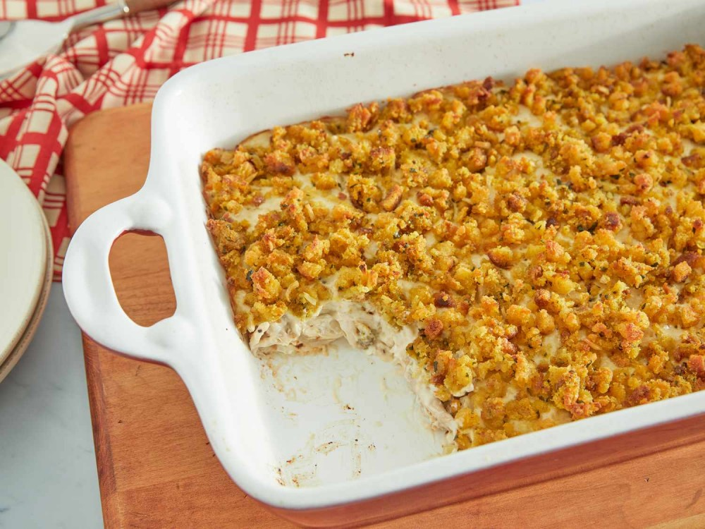

Chicken Casserole

Description
This is a family favorite. This is what comfort food is all about.
It pairs well with all kinds of sides, from mashed potatoes to
mixed veggies. It is super simple and can be made quickly or you
can take the time to make it more complex.
Ingredients
- 2 lb. Skinless boneless chicken breasts (frozen or fresh).
- 2 10.5 oz cans of Campbell's Cream of Chicken soup(or 1 22.4 oz Family size can)
- 2 6 Oz boxes of Stove Top Stuffing your choice of flavor ( I use the Cornbread and Savory Herbs flavors)
- 1/2 cup butter or margarine (for the stuffing)
Steps
Home